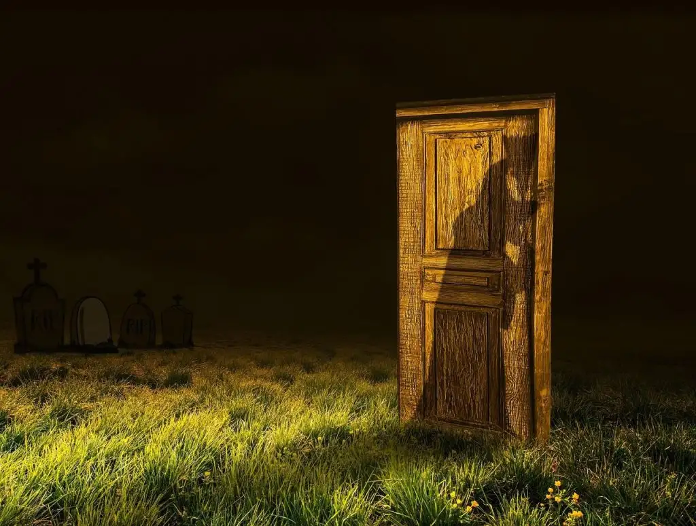

Omnia exeunt in mysterium.

Últimamente le doy vueltas a esta idea: todo aquel que se dedica a la filosofía pende de una única tesis, formulada por Sócrates: «una vida sin examen no merece ser vivida». Pero veo a mucha gente, escucho a algunos y hablo con unos pocos. La tendencia al autoexamen es minoritaria, la preocupación intelectual escasa, la pulsión por el saber, ínfima.
La única justificación de la tesis socráticas es la misma ejemplaridad de Sócrates. Argumento ad hominem, circular. Incluso Nietzsche, el gran negador de Sócrates, se sostenía sobre el hilo intelectualista: su propia vida fue un examen del examen de Sócrates, una imitación.
Pues bien… ¿Estaba Sócrates en lo cierto? ¿Acaso una vida sin examen no tiene exactamente el mismo valor? Subir en la existencia, cumplir con los imperativos biológicos, decaer en la vejez y agostarse hasta dejar de existir para dar paso a los siguientes organismos que se nutren de nuestra decadencia. Con o si reflexión. ¿Qué es merecerse la vida?
Ocurre como a Alcibiades, cuando se alejó de Sócrates: es entonces cuando es consciente de que yace algo equivocado en sus actos, y se avergüenza y duda; pero al tiempo Sócrates es un misterio y nadie puede saber si está en lo cierto o no ¿Y en este caso? ¿Quién sabe?
Omnia exeunt in mysterium. Idea que Arthur Machen, seguramente toma de Coleridge:
«Omnia exeunt in mysterium, says a schoolman; that is, There is nothing, the absolute ground of which is not a Mystery. The contrary were indeed a contradiction in terms: for how can that, which is to explain all things, be susceptible of an explanation? It would be to suppose the same thing first and second at the same time.»
Coleridge, S. T. (1825). Aids to reflection: In the formation of a manly character on the several grounds of prudence, morality, and religion (p. 247). Longman, Rees, Orme, Brown, and Green.
Para Coleridge, dentro del marco clásico del pensamiento, de Agustín y muchos otros, aunque quizá el más célebre sería Pascal en sus Pensées, es un camino a la fe; para Machen podría ser un camino al horror; pero también podría ser un camino a la fútil inanidad, a la existencia superflua de Chulkaturin (Turgeniev); aunque ahora parecemos decaer en otra cosa, en una forma humanoide, transhumana, donde la conciencia se oblitera.
Hoy, donde todo misterio tiende a ser disuelto en la trivialidad, todo esto adquiere la forma de una subjetividad ya pasada e irritante, que brotó de una negatividad, percibida en el presente como trivial: de un sujeto que no demanda integrarse políticamente, sumido en la nostalgia, en el «narcisismo» (Lash) o en la aceptación de la «ausencia de alternativas» (Fisher, Berardi y muchos otros). En una palabra, en la felicidad.
Publicado originalmente en PortalEdu. Texto e imágenes conservados de la publicación original.